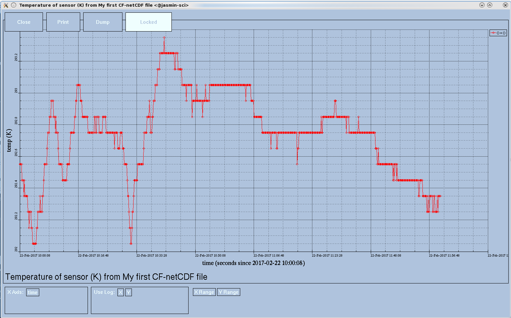
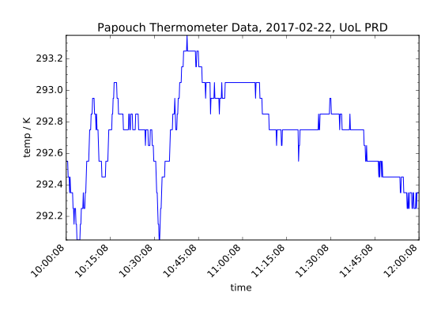

In computing, a serial port is a serial communication physical interface through which information transfers in or out one bit at a time (in contrast to a parallel port). Throughout most of the history of personal computers, data was transferred through serial ports to devices such as modems, terminals and various peripherals.
(ref: Wikipedia )
https://pythonhosted.org/pyserial/shortintro.html
#!/usr/bin/python2.7
import serial
ser = serial.Serial(
port='/dev/ttyUSB0',
baudrate=9600,
bytesize=serial.EIGHTBITS,
parity=serial.PARITY_NONE,
stopbits=serial.STOPBITS_ONE
)
Figure out how to read and return data from the ser object.
As well as the pyserial shortintro above, you may find https://pythonhosted.org/pyserial/pyserial_api.html and the Papouch thermometer datasheet useful.
readline() work (easily)?¶#!/usr/bin/python2.7
import serial
ser = serial.Serial(
port='/dev/ttyUSB0',
)
print ser.read(size=8) # "8" here is specific to the Papouch thermometer device
ser.close()
$ python readserial_basic.py
+025.1C
/dev/ttyUSB0 is Linux's way of referring to the first USB serial port/dev/ttyUSB1, /dev/ttyUSB2 and so-on /dev/ttyS0, /dev/ttyS1 etc. COM1, COM2, COM3, etc. (USB ports normally start at COM3, but not always) /dev/tty.SOMETHING, e.g. /dev/tty.PL2303-xxxser.read(size=8) ?¶If you refer to the Papouch thermometer datasheet 's "Communication Protocol" section, you will see:
<sign><3 characters – integer °C> <decimal point><1 character – tenths of °C> <C><Enter>
as a description of the output. In ASCII coding, each character is one byte so each temperature from the thermometer is eight bytes.
For the data to be useful you need to add a date and time reading. You can use the module datetime ( http://docs.python.org/2/library/datetime.html )
Add date and time to your output.
#!/usr/bin/python2.7
from datetime import datetime
import serial
ser = serial.Serial(
port='/dev/ttyUSB0',
baudrate=9600,
)
print datetime.utcnow().isoformat(), ser.read(size=8)
ser.close()datetime.utcnow().isoformat() is, as you might expect, a command to return the current UTC in ISO format, e.g.:
2014-03-06T11:55:43.852953 +025.3C
print datetime.utcnow().isoformat(), ser.read(size=8) datetime.utcnow() call can return in advance of the ser.read() calldatastring = ser.read(size=8)
print datetime.utcnow().isoformat(), datastringisoformat() produces a standard format by default - rarely is that a problem.strftime() will do any format you require (e.g. for documents intended to be read by people)Python 2.7.3 (default, Feb 21 2014, 13:11:38)
[GCC 4.4.7 20120313 (Red Hat 4.4.7-3)] on linux2
Type "help", "copyright", "credits" or "license" for more information.
>>> from datetime import datetime
>>> dt = datetime.now()
>>> print dt
2016-04-12 17:32:38.806353
>>> dt
datetime.datetime(2016, 4, 12, 17, 32, 38, 806353)
>>> print dt.strftime('%Y-%m-%d %H:%M:%S')
2016-04-12 17:32:38
>>> print dt.strftime('%A, %B %d, %Y')
Tuesday, April 12, 2016
You are probably going to want your data capture code to run indefinitely, or at least more than once. You should be familiar with flow control and looping constructs from your Intro To Python.
Add a loop to your code to continuously log the reading and time.
Try and get the same output using readline() instead. Why might this be preferable for other instruments?
In most cases, you will need to log more than one data point. A basic modification is fairly simple, using a while loop:
#!/usr/bin/python2.7
from datetime import datetime
import serial
ser = serial.Serial(
port='/dev/ttyUSB0',
baudrate=9600,
)
while ser.isOpen():
datastring = ser.read(size=8)
print datetime.utcnow().isoformat(), datastring
ser.close()returns something like:
2014-03-06T14:20:28.147494 +023.9C 2014-03-06T14:20:28.849280 +024.0C 2014-03-06T14:20:38.769283 +024.0C 2014-03-06T14:20:48.688270 +024.1C 2014-03-06T14:20:58.608165 +024.1C
readline()¶ser.read(size=8) is fine. readline() to handle this case.#!/usr/bin/python2.7
from datetime import datetime
import serial, io
ser = serial.Serial(
port='/dev/ttyUSB0',
baudrate=9600,
)
sio = io.TextIOWrapper(io.BufferedRWPair(ser, ser, 1), encoding='ascii', newline='\r')
while ser.isOpen():
datastring = sio.readline()
print datetime.utcnow().isoformat(), datastring
ser.close()Usually you will want to output the data to a file rather than the terminal, so, e.g., the data are on disk in case of a fault or similar.
Alter your code to write the data out to a file.
#!/usr/bin/python
'''This version of the readserial program demonstrates
using python to write an output file'''
from datetime import datetime
import serial, io
outfile='/tmp/serial-temperature.tsv'
ser = serial.Serial(
port='/dev/ttyUSB0',
baudrate=9600,
)
sio = io.TextIOWrapper(
io.BufferedRWPair(ser, ser, 1),
encoding='ascii', newline='\r'
)
with open(outfile,'a') as f: #appends to existing file
while ser.isOpen():
datastring = sio.readline()
#\t is tab; \n is line separator
f.write(datetime.utcnow().isoformat() + '\t' + datastring + '\n')
f.flush() #included to force the system to write to disk
ser.close()(see python/exercises/example_code/ldfsp.py in your git checkout)
[user01@unst ~]$ ls -F /dev/serial/by-id/*
/dev/serial/by-id/usb-Prolific_Technology_Inc._USB-Serial_Controller_D-if00-port0@
[user01@unst ~]$ ls -F /dev/serial/by-path/*
/dev/serial/by-path/pci-0000:00:14.0-usb-0:1:1.0-port0@
/dev/serial/by-path/pci-0000:00:14.0-usb-0:2:1.0-port0@
Most instruments with serial access will have a (possibly quite short) section in the manual detailing the connection settings. Of course, your instrument might be quite old and the manual lost, in which case:
With any luck, the manual will be on their website. Of course they might be out of business, or unwilling or unable to help, in which case:
Use a search engine of your choice
As long as you get the voltage right (usually 3.3v or 5v) you probably can't damage your instrument by trying various combinations of serial settings until something works. 9600-8N1 is usually the best place to start
Assuming you've got some data of the format:
2017-02-22T10:00:08.457120 +019.4C 2017-02-22T10:00:18.438098 +019.4C 2017-02-22T10:00:28.419100 +019.4C 2017-02-22T10:00:38.400093 +019.4C 2017-02-22T10:00:48.381103 +019.3C 2017-02-22T10:00:58.362099 +019.3C 2017-02-22T10:01:08.342102 +019.3C …
You wouldn't really be happy with that as an archive file - if you came back to it in a few years (or someone else did, perhaps after you've moved on) there's several items of missing information.
Before we write a NetCDF file, we must convert the text file to usable data. Our temperature is in a slightly weird format due to the Papouch sensor including the units, so we need functions to convert the string into a number and the time into a Python `datetime` object.
datetime object.¶float in Kelvin.¶(T K = T C + 273.15)
def convert_time(tm):
tm = datetime.strptime(tm, "%Y-%m-%dT%H:%M:%S.%f")
return tm
def convert_temp(temp):
value = temp.strip("+").strip("C").lstrip("0")
return float(value) + 273.15
strptime is the opposite of strftime that we used earlier.
csv module¶Python has a module designed for reading in text formats. It's called csv, although it also does tab-separated and related structured ASCII formats. We only need the base reader object here. (Other reader objects deal with more complex cases - f.ex. DictReader)
Q1. Read your datafile into Python using the csv module such that you end up with list object(s) containing floating-point temperature in K and timestamps as Python datetime objects.
csv module -2¶infile='sample-serial-temperature-2h.tsv'
outfile='sensor-data.nc'
from csv import reader
# Parse the data into python lists
times = []
temps = []
#open infile and read data into lists
with open(infile, 'rb') as tsvfile:
tsvreader = reader(tsvfile, delimiter='\t')
for row in tsvreader:
times.append(convert_time(row[0]))
temps.append(convert_temp(row[1]))
The call to reader returns an iterator so we can iterate over it with a for loop.
We can write the data from the serial logging exercise to a new NetCDF file.
Dataset (use the format NETCDF4_CLASSIC)Dimension for your time seriesVariable objects for Temp and Time using appropriate units etc.Variable and and the DatasetDatasetDataset. Test that it parses correctly eith ncdumpNetCDF using CF conventions stores times as an offset from a base time rather than an absolute time, so we first subtract base_time, and then convert the resulting timedelta object to an offset in seconds.
# Set reference time and convert datetime values to offset values from reference time
#reference time is the first time in the input data
base_time = times[0]
time_values = []
for t in times:
value = t - base_time
ts = value.total_seconds()
time_values.append(ts)
time_units = "seconds since " + base_time.strftime('%Y-%m-%d %H:%M:%S')# Create the output file (NetCDF dataset)
dataset = Dataset(outfile, "w", format='NETCDF4_CLASSIC')
# Create the time dimension - with unlimited length
time_dim = dataset.createDimension("time", None)
# Create the time variable
time_var = dataset.createVariable("time", np.float64, ("time",))
time_var[:] = time_values
time_var.units = time_units
time_var.standard_name = "time"
time_var.calendar = "standard"
# Create the temp variable
temp = dataset.createVariable("temp", np.float32, ("time",))
temp[:] = tempsOne of the advantages of NetCDF is that it can contain metadata. We'll set a dictionary to contain it so we don't repeat ourselves.
# Set the variable attributes
temp.var_id = "temp"
temp.long_name = "Temperature of sensor (K)"
temp.units = "K"
temp.stabdard_name = "air_temperature"
# Set the global attributes
dataset.Conventions = "CF-1.6"
dataset.institution = "NCAS"
dataset.title = "My first CF-netCDF file"
dataset.history = "%s: Written with script: write_sensor_data_to_netcdf.py" % (datetime.now().strftime("%x %X"))
You can do a quick-and-dirty plot with ncview:
ncview sensor_data.nc

Obviously, this is not publication quality.
Q1. Produce a line plot of temperature vs time using matplotlib and reading the data from your NetCDF file.
#!/usr/bin/python2.7
''' Plots a line graph from a NetCDF file '''
from netCDF4 import Dataset
import numpy as np
datafile = 'sensor_data.nc'
nc = Dataset(datafile, mode='r')
temps = nc.variables['temp'][:]
times = nc.variables['time'][:]
times = num2date(time[:],units=time.units, calendar=time.calendar)
plt.plot_date(times,temps)
plt.savefig('sensor_data.png')
After times = num2date(time[:],units=time.units, calendar=time.calendar)
#get "handles" to affect plot styling
fig, ax = plt.subplots()
#tick every tenth minute
ax.xaxis.set_major_locator(MinuteLocator(byminute=range(0,60,10)))
#format of date on x-axis (display minutes, uses strftime)
ax.xaxis.set_major_formatter(DateFormatter('%H:%M'))
#tick every minute
ax.xaxis.set_minor_locator(MinuteLocator())
ax.autoscale_view()
#line graph
plt.plot_date(times,temps,'-')
labels = ax.get_xticklabels()
plt.setp(labels, rotation=90, fontsize=10, horizontalalignment='center')
plt.xlabel(time.standard_name)
plt.ylabel(temp.standard_name + ' / ' + temp.units)
plt.title(nc.title)
#tidy up layout automatically
fig.tight_layout()
plt.savefig('sensor_data.png')
(see python/exercises/example_code/plot-netcdf.py in your git checkout)
Another option is CIS
"CIS is an open source command-line tool for easy collocation, visualization, analysis, and comparison of diverse gridded and ungridded datasets used in the atmospheric sciences"
It is based on python. Homepage: http://www.cistools.net/
cis plot temp:sensor_data.nc --xaxis time --yaxis temp \
--title "Papouch Thermometer Data, 2017-02-22, UoL PRD" --xstep "0.010416" \
--output sensor_data_sample.svg
e.g. using optparse (for Python < v2.7) or argparse (Python ≥ 2.7)